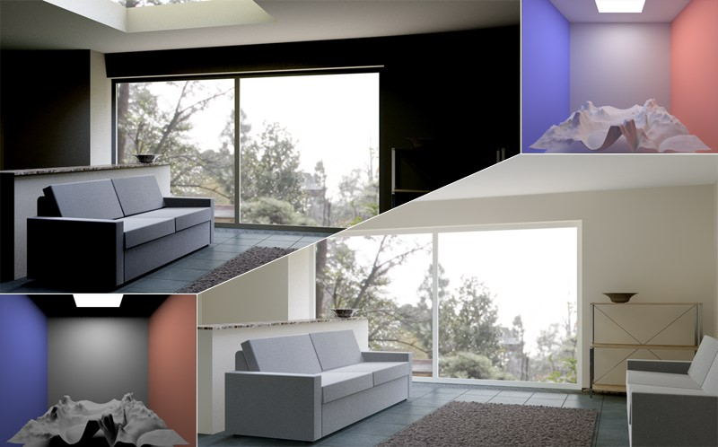

Function available in CINEMA 4D Prime, Visualize, Broadcast, Studio & BodyPaint 3D
Global Illumination
The continual technological advances being made in the world of computer graphics (faster computers, improved algorithms, etc.) make realistic rendering increasingly easy. A major element of realistically rendered images is natural light dispersion within the scene. Two ways to achieve this are:
- Very experienced 3D artists will place light sources in a precise manner that will result in realistic light dispersion. Advantage: Shorter render times. Disadvantage: You have to be very experienced to achieve acceptable results.
- Light sources are placed at the exact locations at which they would be placed in the real world. Global Illumination (GI) is then applied to realistically disperse the light. Advantage: The dispersion of light corresponds to that in the real world, and even inexperienced artists can use this method. Disadvantage: Comparably long render times.
So, what is GI?
Left: Scene rendered with Area Light, no GI. Right: Scene rendered with GI. Notice the color bleeding - where the colored walls meet the back wall - and the harmonious dispersion of light. The additional reflection of light makes a GI scene brighter overall and areas that are completely black are very rare. (scene is © Holger Schömann)
GI is the interaction of light between different objects within a scene. Simply said, light is reflected onto objects, as it occurs in the real world. Light also reaches areas (e.g., corners) that normal light sources would not illuminate (in the example image above you can see many black areas that are not reached by any light source in the scene rendered without GI).
That’s pretty much what GI does. Although it sounds simple, the actual process is quite complicated: When a scene is rendered using conventional sources of light, light is only emitted from a limited number of light sources (the lights themselves). When GI is applied, pretty much any part of an object can reflect light.
Where can I find the GI settings?
GI parameters can be found in the following locations within Cinema 4D:
To activate GI all you have to do is:
- Open the 编辑渲染设置 dialog window (main menu: Render - or simply press Ctrl+B)
- Click on the Effects … button and select Global Illumination
- In the GI settings that then appear, select the preset you need for your projection type from the Preset menu.